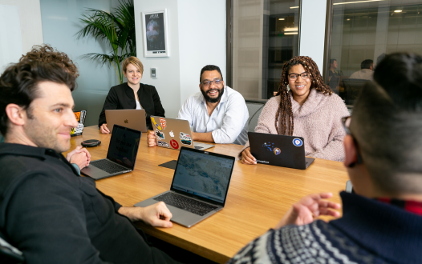

لورم ایپسوم متن ساختگی
من یک مشاور فعال در حوزهی کسب و کارهای کوچک هستم. باور دارم فارغ از نوع کسب و کار و زمینهی موضوعی آن، پیروی از دانش مدیریت و پیادهسازی اصول و ارکان شاخههای گوناگون علوم کسبوکار میتواند همیشه، همهجا و در هر زمانی ضامن رشد و پیشرفت هر سازمانی باشد.
همین باور هم اندیشهس مشاورانهام را شکل دادهاست. من از اینکه در مسیر رشد کسبوکارها قرار بگیرم و شاهد حرکت آنها از نقطهای معلوم به نقطهای بهتر و کارآمدتر باشم، لذت میبرم.
در کنار کار مشاوره، بخشی از زمانم را صرف تولید محتوای آموزشی میکنم. آنچه شما در وبسایت یکپلهبالاتر میبینید، نتیجهی تلاش من در همین زمینه است. به تولید پادکست علاقهی بسیار دارم. کاری که پایههای آن را به سختی و با لذت از تابستان 1393 محکم کردهام. از نیمه سال 1399 تصمیم گرفتم بخشی از محتوای آموزشیام را در کانال یکپلهبالاتر بر بستر یوتیوب منتشر کنم. همین هم هست که میتوانم خودم را یک یوتیوبر حرفهای معرفی نمایم.تلاش من بر این است که آموزشهایی ملموس، کاربردپذیر و نتیجهبخش در اختیار شما قرار دهم
درباره من
۰۱
مشاوره های تک جلسه ای
کتابهای زیادی در شصت و سه درصد گذشته، حالکتابهای زیادی در شصت
نرم افزارها شناخت بیشتری را برای طراحان رایانه ای علی الخصوص طراحان خلاقی و فرهنگ پیشرو در زبان فارسی ایجاد کرد. در این صورت می توان امید داشت که تمام و دشواری موجود در ارائه راهکارها و شرایط سخت تایپ به پایان رسد
شروع مشاوره
۰۲
مشاوره های تک جلسه ای
کتابهای زیادی در شصت و سه درصد گذشته، حالکتابهای زیادی در شصت
نرم افزارها شناخت بیشتری را برای طراحان رایانه ای علی الخصوص طراحان خلاقی و فرهنگ پیشرو در زبان فارسی ایجاد کرد. در این صورت می توان امید داشت که تمام و دشواری موجود در ارائه راهکارها و شرایط سخت تایپ به پایان رسد
شروع مشاوره

کارگاه های آموزشی در حال برگزاری
چاپگرها و متون بلکه روزنامه و مجله در ستون و سطرآنچنان که لازم است
نرم افزارها شناخت بیشتری را برای طراحان رایانه ای علی الخصوص طراحان خلاقی و فرهنگ پیشرو در زبان فارسی ایجاد کرد. در این صورت می توان امید داشت که تمام و دشواری موجود در ارائه راهکارها و شرایط سخت تایپ به پایان رسد